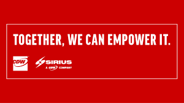

Sirius is a national integrator of technology-based buisness solutions that span the enterprise, including the data center and lines of buisness. Built on products and services from the world's top technology companies, Sirius solutions are installed, configured and supported bu our dedicated teams of highly certified experts. With the right people and the right partners, Sirius focuses on solutions that will help you manage you operations, optimize your IT, secure it all, and transform your business. We require our teams to be certified in multiple disciplines and products, so they can help you get from the high-level architecture of a solution all the way down to the technical configuration and implementation of point-products. Since its founding in offers integrated, multivendor technology solutions that meet the requirements of the full range of organizations, from small business with fewer than 500 employees to large enterprises with thousands of employees and hundreds of locations.
DIGITAL EXPERIENCE
The Sirius Digital Experience (DX) practice encompasses all the components for building successful Web Content Management and Digital Asset Management solutions with our staff. The Sirius DX team is made up of qualified information and software architects, UI/UX designers, and developers who possess both industry knowledge and extensive technical background in digital solutions across a variety of platforms and devices.Our experts think out-side the box to best design and develop solutions that ensure a better user experience and value based upon your specific needs and business objectives.
QUALITY ASSURANCE
Ready to propel your organization to astonishing new heights? Sirius can help you become more agile, innovative and secure than you ever imagined. As a national integrator of comprehensive technology-based solutions, we help you master digital and harness the power of your data through transformation that transcends industries and reinvents the customer experience.
MANAGED SERVICES
Sirius Managed Services (SMS) can help by serving as your single provider of solutions and talent for IT application transformation, engineering and operations. SMS will help you: Move faster by expanding the productivity of your staff or filling gaps of specific skill sets Improve cloud adoption and drive value from these platforms Ensure you are consistently compliant, secure, and reducing risk to your business With a staff of more than 300 technical professionals, and 4,000+ technical certifications across all infrastructure, OS and virtualization platforms, you can feel confident knowing that Sirius has the expertise, scale, and ITIL-based processes to meet the strictest SLAs while managing your environments.
INFORMATION TECHNOLOGY
A Self-Study In Cloud & Business Transformation. Sirius catapults to real-time efficiency by replacing its CRM, PSA and ERP systems with cloud-based Salesforce